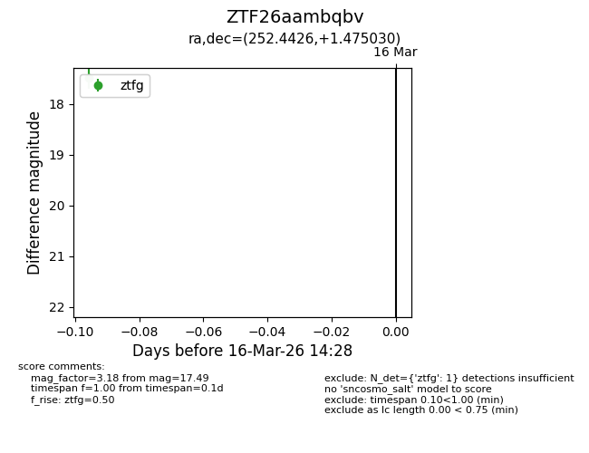
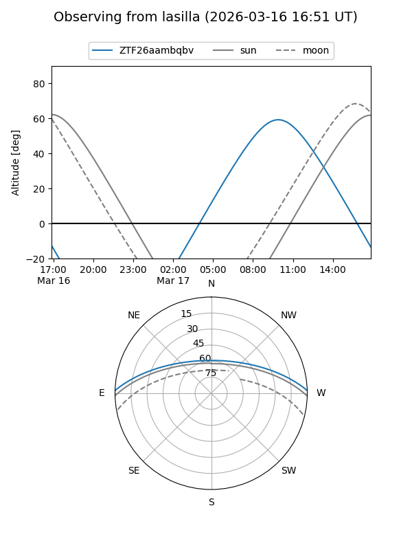
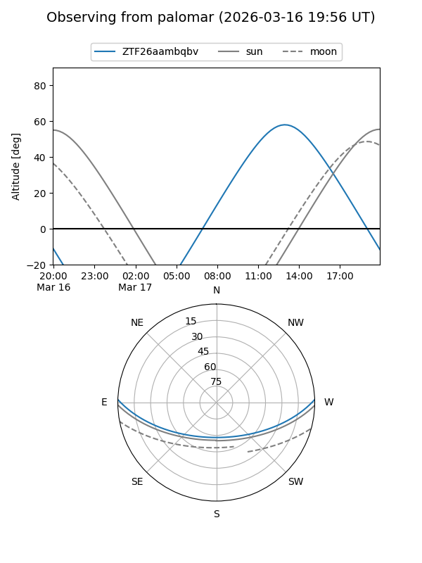

ZTF26aambqbv
Target ZTF26aambqbv at 2026-03-16 14:30
Aliases and brokers:
FINK: link
Lasair: link
ALeRCE: link
alt names
ZTF26aambqbv (ztf,fink_ztf)
Coordinates:
equatorial (ra, dec) = 252.4426,+1.47503
equatorial (HMS+DMS) = 16:49:46.23,+01:28:30.11
galactic (l, b) = (19.3750,+27.52774)
Flags:
Photometry:
last ztfg=17.49
1 ztfg detections
Lightcurve

Visibility


Additional plots